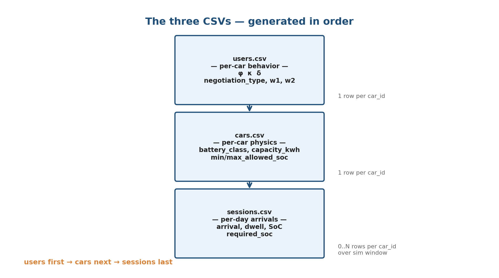

users.csv → cars.csv → sessions.csv. Drag sliders, watch the distributions and the worked-day trace update live.
Think of every car as belonging to a group (a region — say, flexible_local), and having its own personality within that group. The group sets the typical shape of arrival, dwell and SoC. The personality bends those typical shapes for this specific car.
users.csv:
Region presets in the panel above set the personality sliders to the middle of the region's bounds, and load the region's default shape. Drag any slider after that and the region selector flips to "custom" — meaning you've stepped outside any preset.
users.csv conceptually.sessions.csv.Source: src/v2b_syndata/renderers/sessions.py (copula at line 44, sampling dispatch at line 124).
Setting a preset fills the (φ, κ, δ, ρ) sliders and region marginals (μ, σ, k, λ, α, β, shift). After that, dragging a slider switches to "custom".
Pie below uses these weights as p; α controls how tight realized_mix sticks to p.
α large ⇒ realized_mix ≈ p (declared) every sample. α small ⇒ each draw dominated by ONE random component (mean across many redraws ≈ p). Hit Re-sample to redraw.
Each cluster has its own (w1, w2) ~ N(μ, σ), clipped ≥ 0. Selecting one moves the scatter to that archetype.
Step 3 of sessions.csv is a bivariate Gaussian copula on (arrival_hour, dwell_hours):
z1, z2 ~ N(0,1) z2' = ρ·z1 + √(1−ρ²)·z2 u1 = Φ(z1), u2 = Φ(z2') arrival = TruncNorm⁻¹(u1; μ, σ_eff, [lo, hi]) dwell = Weibull⁻¹(u2; k, λ)
Why ρ matters: ρ < 0 ⇒ early arrivers stay longer. Implementation mirrors src/v2b_syndata/renderers/sessions.py:44.

One sampled day for the current sliders. Re-runs every time anything changes.